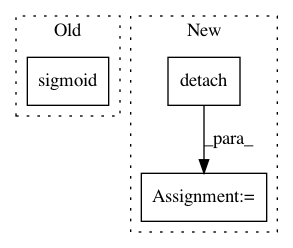

685bf12edbaf20d969dc28549e634c9fa4993f5f,dl/callbacks.py,IOUCallback,on_batch_end,#IOUCallback#Any#,98
Before Change
valid_msks = state.input[self.input_key]
iou = get_iou_vector(valid_msks.detach().cpu().numpy(),
msk_vpreds.sigmoid().detach().cpu().numpy())
key = "iou"
state.batch_metrics[key] = iou
After Change
valid_msks = state.input[self.input_key]
// msk_vpreds = msk_vpreds.sigmoid()
msk_vpreds = msk_vpreds.detach().cpu().numpy()
valid_msks = valid_msks.detach().cpu().numpy()
iou = get_iou_vector(valid_msks, msk_vpreds)
key = "iou"
state.batch_metrics[key] = iou
In pattern: SUPERPATTERN
Frequency: 3
Non-data size: 3
Instances
Project Name: Scitator/catalyst
Commit Name: 685bf12edbaf20d969dc28549e634c9fa4993f5f
Time: 2018-10-14
Author: ngxbac.dt@gmail.com
File Name: dl/callbacks.py
Class Name: IOUCallback
Method Name: on_batch_end
Project Name: rusty1s/pytorch_geometric
Commit Name: f6532b3c4c329e6d5d5fb846acc441df47616c4c
Time: 2020-03-22
Author: matthias.fey@tu-dortmund.de
File Name: torch_geometric/nn/models/gnn_explainer.py
Class Name: GNNExplainer
Method Name: explain_node
Project Name: rusty1s/pytorch_geometric
Commit Name: 22e98420bbd9c5a082c894d2df02ae0dbd41846d
Time: 2019-03-20
Author: matthias.fey@tu-dortmund.de
File Name: torch_geometric/nn/models/autoencoder.py
Class Name: GAE
Method Name: eval